| Daikakuji 3 | |
| kenji, akutagawa | |
| jyovanni godokaisha (2013) | |
Is there was a song that came to mind when you are creating this manuscript.
It is a song that was made in 1949.
Naoya Uchida Lyrics
Composer Nakata Yoshinao
Of the town where it snows
Of the town where it snows
Only by the remembrance
It passes and it goes.
Of the town where it snows
From the far country
It falls.
Of this remembrance
Of this remembrance
It will tuck sometime and the day.
Happiness's warm one
The smile
Est il y avait une chanson qui vient à l'esprit lorsque vous créez ce manuscrit.
C'est une chanson qui a été faite en 1949.
Naoya Uchida Lyrics
Compositeur Nakata Yoshinao
De la ville où il neige De la ville où il neige
Seulement par le souvenir
Il passe et il va.
De la ville où il neige Du pays lointain
Il tombe.
De ce souvenir De ce souvenir
Il rentrer quelque temps et le jour.
Chaud un de Bonheur
le sourire

Ist es ein Lied, das in den Sinn kam, wenn man Erstellung dieser Handschrift.
Es ist ein Lied, das im Jahr 1949 gemacht wurde.
Naoya Uchida Songtext
Komponist Nakata Yoshinao
Von der Stadt, wo es schneit Von der Stadt, wo es schneit
Nur durch die Erinnerung
Es geht, und es geht.
Von der Stadt, wo es schneit
Aus dem fernen Land
Es fällt.
Von dieser Erinnerung Von dieser Erinnerung
Es wird irgendwann der Tag stecken.
Warme Glück
Das Lächeln
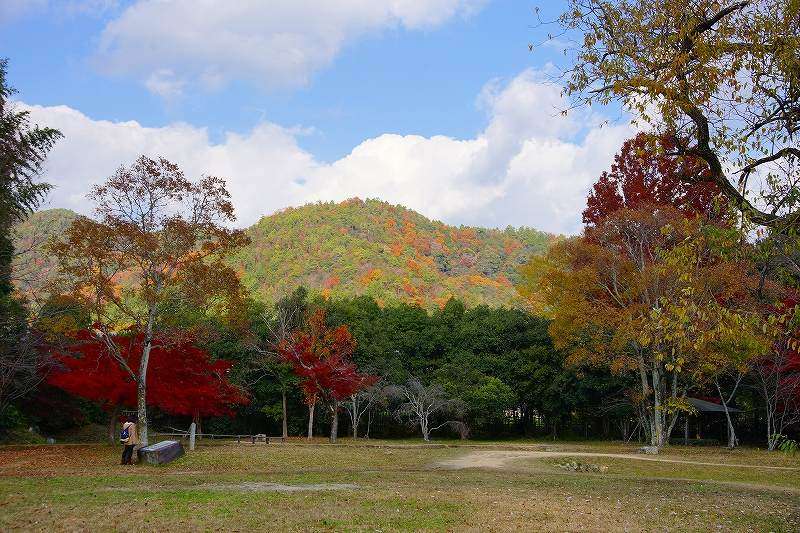
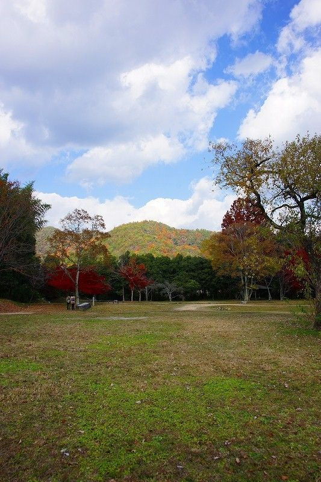
C'è stata una canzone che è venuto in mente quando si sta creando questo manoscritto.
E 'una canzone che è stata fatta nel 1949.
Uchida Testo della canzone Naoya
Compositore Nakata Yoshinao
Della città dove nevica Della città dove nevica
Solo il ricordo
Si passa e va.
Della città dove nevica
Dal paese lontano
Cade.
Di questo ricordo Di questo ricordo
Sarà infilare qualche tempo e il giorno.
Uno caldo della Felicità
il sorriso

Había una canción que se produjo cuando la creación de este manuscrito y vino.
Es una canción que se hizo en 1949.
Naoya Uchida Lyrics
Compositor Nakata Yoshinao
De la ciudad donde nieva De la ciudad donde nieva
Sólo por el recuerdo
Se pasa y se va.
De la ciudad donde nieva
Desde el lejano país
Cae.
De este recuerdo De este recuerdo
Será meter en algún momento y el día.
Cálida propia felicidad
La sonrisa
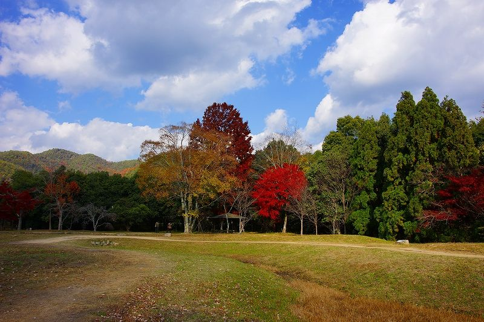
Havia uma canção que ocorreu ao criar este manuscrito e entrou.
É uma canção que foi feita em 1949.
Lyrics Naoya Uchida
Compositor Nakata Yoshinao
É a cidade onde neva É a cidade onde neva
Só pela lembrança Ele passa e ele vai.
É a cidade onde neva Do país distante
Ele cai.
Desse lembrança Desse lembrança
Ele vai dobrar em algum momento e do dia.
Um quente de Felicidade
o sorriso
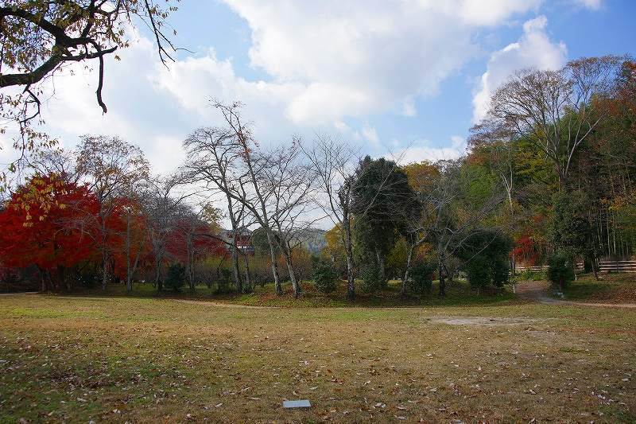
ਇਸ ਦਾ ਖਰੜਾ ਬਣਾਉਣ ਜਦ ਆਈ ਹੈ ਅਤੇ ਆਏ ਸਨ, ਜੋ ਕਿ ਇੱਕ ਗੀਤ ਆਈ ਸੀ.
ਇਹ 1949 'ਚ ਬਣਾਇਆ ਗਿਆ ਸੀ, ਜੋ ਕਿ ਇੱਕ ਗੀਤ ਹੈ.
Naoya Uchida ਬੋਲ
ਕੰਪੋਜ਼ਰ Nakata Yoshinao
ਇਸ ਨੂੰ ਬਰਫਬਾਰੀ, ਜਿੱਥੇ ਕਸਬੇ ਦੇ ਇਸ ਨੂੰ ਬਰਫਬਾਰੀ, ਜਿੱਥੇ ਕਸਬੇ ਦੇ
ਸਿਰਫ਼ ਯਾਦ ਕਰਕੇ
ਇਹ ਗੁਜਰਦਾ ਹੈ ਅਤੇ ਇਸ ਨੂੰ ਚਲਾ.
ਇਸ ਨੂੰ ਬਰਫਬਾਰੀ, ਜਿੱਥੇ ਕਸਬੇ ਦੇ
ਦੂਰ ਦੇਸ਼ ਦਾ
ਇਹ ਡਿੱਗਦਾ.
ਇਸ ਨੂੰ ਯਾਦ ਕਰਨ ਦਾ ਇਸ ਨੂੰ ਯਾਦ ਕਰਨ ਦਾ
ਇਹ ਕਦੇ ਅਤੇ ਦਿਨ tuck ਕਰੇਗਾ.
ਖ਼ੁਸ਼ੀ ਦਾ ਨਿੱਘਾ ਇੱਕ
ਮੁਸਕਾਨ
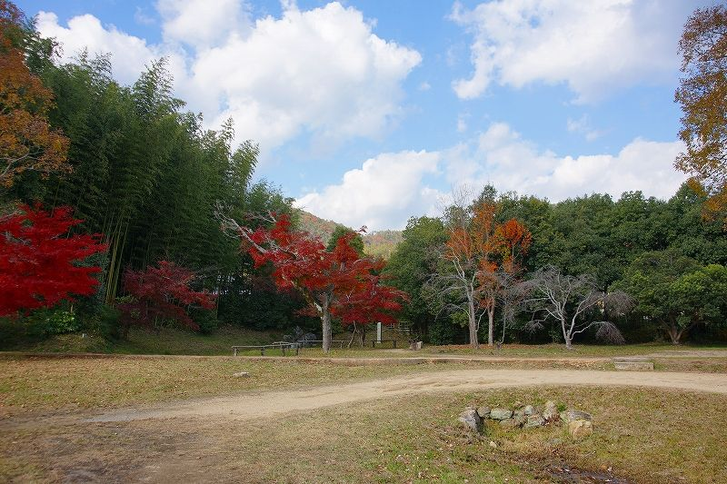
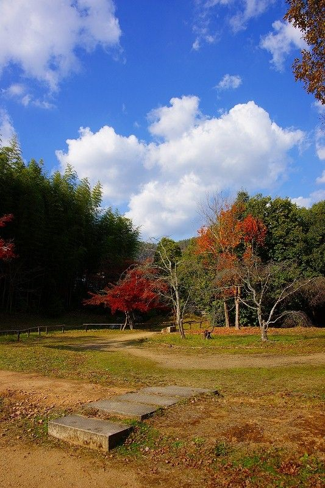
इस पांडुलिपि को बनाते समय हुआ और जो आया एक गाना था.
यह 1949 में बनाया गया था कि एक गाना है.
Naoya उचीडा बोल
संगीतकार Nakata Yoshinao
यह बर्फ जहां शहर के यह बर्फ जहां शहर के
केवल स्मरण से
यह गुजरता है और यह हो जाता है.
यह बर्फ जहां शहर के
दूर देश से
यह गिर जाता है.
इस स्मरण का इस स्मरण का
यह कुछ समय और दिन टक जाएगा.
खुशी की गर्म एक
मुस्कान
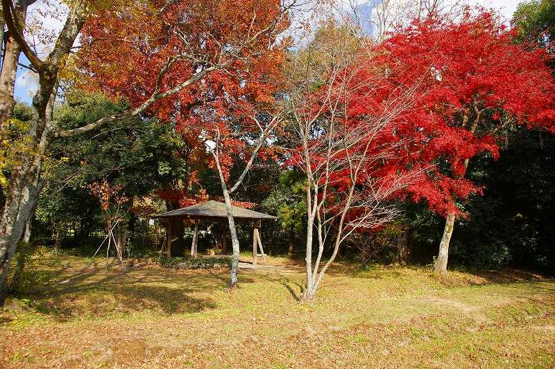
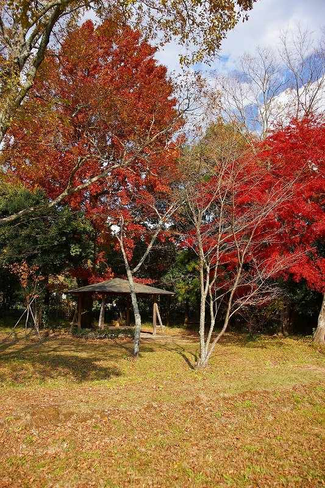
இந்த கையெழுத்து உருவாக்கும் போது ஏற்பட்டது வந்த ஒரு பாடல் இருந்தது.
இது 1949 ஆம் ஆண்டு செய்யப்பட்டது என்று ஒரு பாடல் இருக்கிறது.
Naoya Uchida பாடல்
இசையமைப்பாளர் Nakata Yoshinao
என்னவாவது அங்கு நகரம் என்னவாவது அங்கு நகரம்
மட்டுமே நினைத்து,
இது கடந்து போகும்.
என்னவாவது அங்கு நகரம்
தூரதேசத்திலிருந்து
அது விழும்.
இந்த நினைவஞ்சலி இந்த நினைவஞ்சலி
சிறிது நாள் பள்ளிதான்.
சந்தோஷம் தான் சூடான ஒரு
புன்னகை
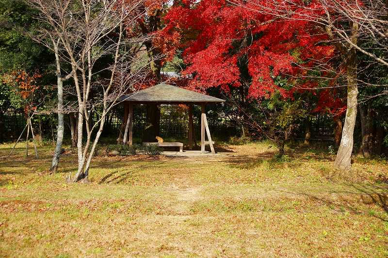
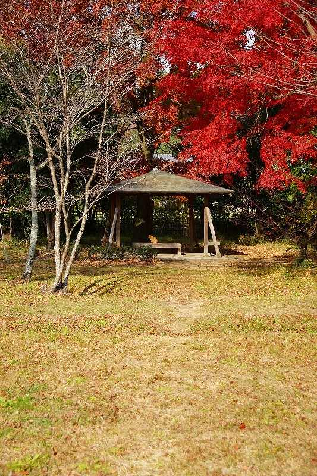
यो पाण्डुलिपि सिर्जना गर्दा भयो र आए जो एक गीतको थियो।
यो सन् 1949 मा भएको थियो कि एक गीतको छ।
Naoya Uchida शब्द
संगीतकार Nakata Yoshinao
बरफ जहाँ शहर बरफ जहाँ शहर
केवल सम्झनामा द्वारा
यो सकिन्छ र यो जान्छ।
बरफ जहाँ शहर
दूर देश देखि
यो खस्छ।
यो सम्झनाको यो सम्झनाको
यो केहि र दिन टक हुनेछ।
आनन्दको न्यानो एक
मुस्कान

या हस्तलिखित तयार करताना आली आणि आले जे गाणे आली.
तो 1949 मध्ये करण्यात आले होते की एक गाणे आहे.
Naoya Uchida गीते
रचनाकार Nakata Yoshinao
तो snows जेथे शहराचे तो snows जेथे शहराचे
केवळ स्मरण करून
तो जातो आणि तो जातो.
तो snows जेथे शहराचे
आतापर्यंत देशातून
तो येतो.
या आठवण च्या या आठवण च्या
तो कधीतरी आणि दिवस खोंचणे होईल.
आनंद यांच्या उबदार एक
स्मित
આ હસ્તપ્રત બનાવતી વખતે થઇ હતી અને આવી જે એક ગીત હતી.
તે 1949 માં બનાવવામાં આવી હતી કે ગીત છે.
Naoya ઉચીડાએ ગીતો
રચયિતા Nakata Yoshinao
તે snows જ્યાં ટાઉન તે snows જ્યાં ટાઉન
માત્ર યાદ દ્વારા
તે પસાર થાય છે અને તે જાય છે.
તે snows જ્યાં ટાઉન
દૂર દેશમાં પ્રતિ
તે પડે છે.
આ સ્મૃતિ આ સ્મૃતિ
તે ક્યારેક અને દિવસ ટક આવશે.
સુખ ગરમ એક
આ સ્મિત
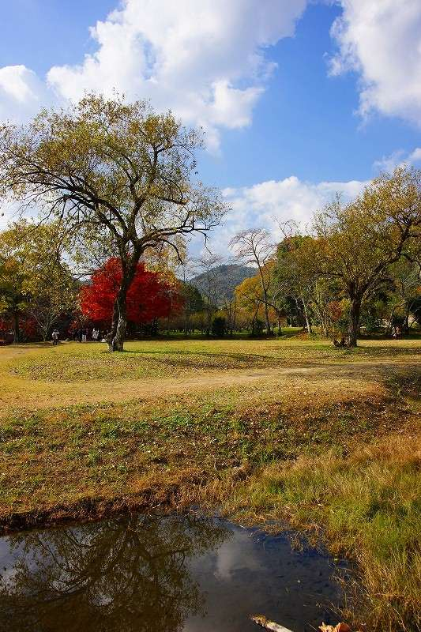

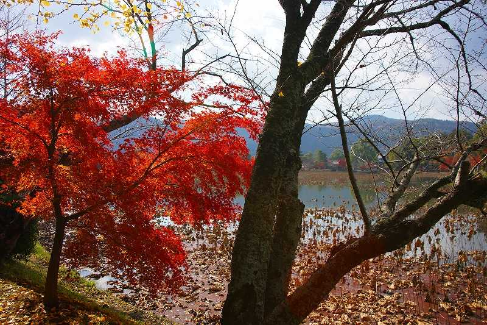